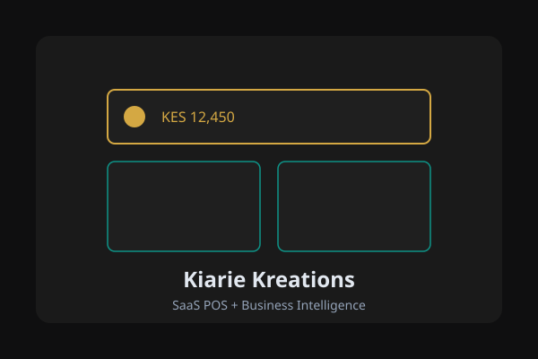

Kiarie Kreations - SaaS POS for African SMBs

Project Overview
Kiarie Kreations is a multi-tenant SaaS platform providing point-of-sale and business intelligence tools to African small and medium businesses. The thesis: POS is just the data capture layer — the real value is in analytics and AI-driven insights that help shop owners make better decisions.
Built as a production-grade monorepo, the system handles M-Pesa mobile payments, Kenya Revenue Authority eTIMS tax compliance, offline-first PWA for unreliable connectivity, and a tiered subscription model from free to enterprise.
Architecture
Turborepo + pnpm monorepo with multiple apps and shared packages:
- apps/pos — The POS application (20+ routes, 58+ database migrations)
- apps/www — Marketing site (static, Vercel-ready)
- apps/dashboard — Owner analytics (planned)
- @kk/shared — Event system, types, tier utilities (Swahili-named tiers)
- @kk/db — Supabase client factory
- @kk/ui — Design tokens and shared components
Key Features
M-Pesa Integration
Native Safaricom M-Pesa STK push for payments. Customers pay by phone, the POS confirms in real-time via webhook callback. Handles the full flow: initiate, poll, confirm, receipt generation. Critical for Kenya where mobile money is the dominant payment method.
eTIMS Tax Compliance
Integration with Kenya Revenue Authority's electronic Tax Invoice Management System. Every sale generates a tax-compliant invoice with QR code verification. This isn't optional — it's legally required for all VAT-registered businesses in Kenya since 2024.
Offline-First PWA
Kenyan SMBs frequently deal with internet outages. The POS works fully offline — transactions queue locally and sync when connectivity returns. Service workers cache the entire app shell, and IndexedDB stores pending transactions.
Tiered Subscription System
Five tiers (using Swahili names reflecting the brand's African identity):
- Kijiji (Capture) — Free, 1 user. Basic POS functionality.
- Biashara (Insight) — KES 2,999/mo. Sales analytics, 3 users.
- Ukuaji (Predict) — KES 7,999/mo. AI forecasting, 10 users.
- Nguvu (Advise) — KES 19,999/mo. Full AI advisory.
- Taifa (Enterprise) — Custom pricing, unlimited users.
Technical Stack
- Frontend: Next.js 15, TypeScript, Tailwind CSS
- Backend/DB: Supabase (PostgreSQL + Auth + Realtime + Storage)
- Monorepo: Turborepo + pnpm workspaces
- Payments: Safaricom M-Pesa API (STK Push)
- Tax: KRA eTIMS API integration
- Offline: Service Workers + IndexedDB
- Future: Python FastAPI for ML (demand forecasting, stockout prediction)
Key Challenges
M-Pesa Callback Reliability
Safaricom's callback system is not perfectly reliable. Built a dual confirmation strategy: webhook callback (primary) + polling fallback (every 5s for 60s). If both fail, the transaction is marked pending for manual reconciliation.
Offline Sync Conflicts
When multiple devices sync after an outage, inventory conflicts arise. Implemented a last-write-wins strategy for simple fields and CRDT-inspired merge for inventory quantities (additive operations only during offline mode).
Multi-Tenancy from Single-Tenant Origins
The project evolved from a single-store POS (Lakewood). Retrofitting multi-tenancy required adding tenant_id to every table, implementing row-level security in Supabase, and building tenant-aware API middleware. Lesson: design for multi-tenancy from day one.
Results
- Production-ready POS with 20+ routes and 58+ migrations
- Full M-Pesa payment flow working end-to-end
- eTIMS-compliant invoicing
- Marketing site built and ready for Vercel deployment
- Designed for scale: multi-tenant architecture, tiered pricing, event-driven analytics pipeline
Lessons Learned
- Local payment APIs (M-Pesa, eTIMS) have sparse documentation — reverse engineering from community forums is often necessary
- Offline-first is not optional for African markets. Design for it or your product dies in the field
- Supabase RLS is powerful but tricky to debug — always test with the actual client library, not just SQL
- Naming tiers in Swahili was a branding win — users connect with it immediately